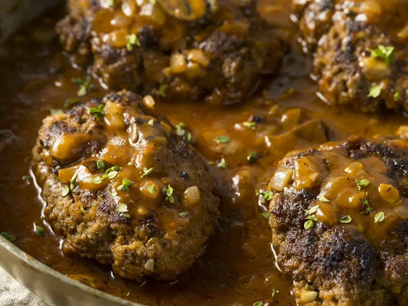

Home
Midwest Salisbury Steak

This recipe for Salisbury steak uses good quality ground sirloin and tastes wonderful. You won't have to drain any grease from the patties once they've browned. Serve over mashed potatoes, egg noodles, or rice
Simply delightful!
Ingredients
- 1 pound ground sirloin
- ½ cup panko bread crumbs
- 1 egg, beaten
- 2 tablespoons milk
- ½ (1 ounce) package dry onion soup mix
- 1 teaspoon Worcestershire sauce
- ¼ teaspoon ground black pepper
- 3 tablespoons butter
- 2 cups fresh mushrooms, sliced
- 1 sweet onion, sliced
- 3 tablespoons all-purpose flour
- ½ (1 ounce) package dry onion soup mix
- 1 ½ cups beef stock
- 1 cup water
- salt and ground black pepper to taste
Steps
- Gather the ingredients
- Make the patties
- Heat a skillet over medium heat.
- Make the gravy
- Gradually add beef stock and water
- Place browned patties into gravy.